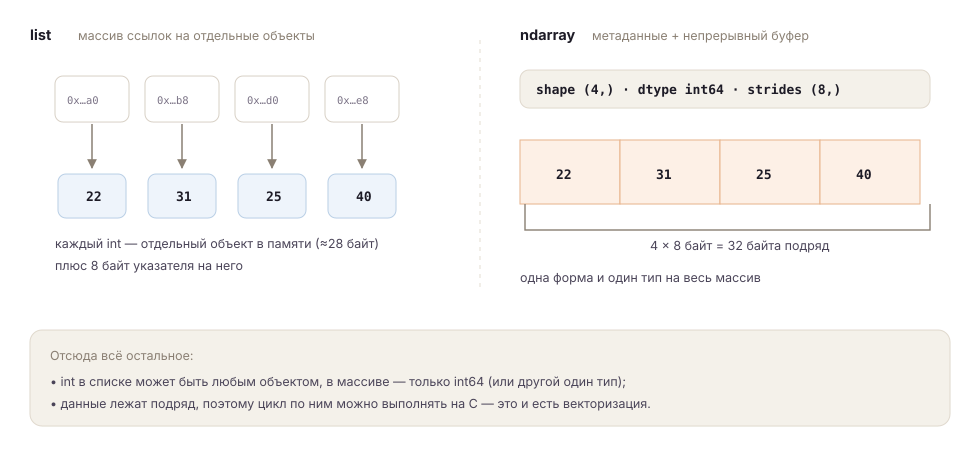

ndarray: сетка вместо списка Почему числовые данные хранят иначе — и почему это меняет скорость
NumPy начинается с решения: числа хранятся не как отдельные объекты в списке, а как ровная сетка одного типа. Из этого решения сразу следует всё остальное — shape, dtype, векторизация и странное поведение при копировании.
Словарь главы — если забыли термины
- ndarray
- Массив NumPy: непрерывный буфер с формой, типом и шагами.
- shape
- Размеры по осям:
(3, 4)— 3 строки, 4 столбца. - dtype
- Тип элементов массива. Один тип на все ячейки.
- strides
- Сколько байт шагнуть, чтобы перейти к следующему элементу оси.
- векторизация
- Операция применяется ко всем элементам без цикла в Python.
01Зачем это backend-разработчику
NumPy редко виден в коде backend-сервиса напрямую — но он лежит под pandas, scikit-learn и почти любым анализом данных. Понимание ndarray объясняет, почему pandas-операции быстрые, а циклы по строкам — нет.
- Векторизация. Одна строка
(arr * 1.1)делает то же, что цикл по миллиону элементов, но в десятки раз быстрее. - Память. Миллион чисел в массиве — 8 МБ, в списке — десятки мегабайт: ссылки плюс отдельные объекты.
- Модель формы.
shape— это то, что потом станет индексом и колонками в pandas. Ошибки формы — половина ошибок в анализе данных. - Собеседование: «чем ndarray отличается от list», «что такое dtype», «зачем нужен shape» — проверяют понимание численного стека.
02Ассоциация-якорь: сетка в клетку
list — это полка с коробками. На каждой полке лежит ссылка на отдельную коробку: где-то в глубине памяти. Коробки могут быть разного размера и разного типа.
ndarray — это лист в клетку. Клетки одинакового размера, стоят вплотную, и у листа
есть паспорт: сколько клеток по каждой стороне (shape), что в клетке
(dtype) и сколько байт до следующей (strides).
03Ассоциативный ряд: восемь звеньев
- import numpy as npкороткое имя, так принято
- np.arrayсетка из списка: копирует данные
- shapeразмеры по осям: (5,) или (3, 4)
- ndimчисло осей: 1 — вектор, 2 — матрица
- dtypeодин тип на все клетки
- stridesсколько байт шагнуть по оси
- векторизацияоперация над всеми клетками сразу
- агрегатsum, mean, max — без цикла
04Схема: две модели памяти

Запомните эту разницу — она объясняет три вещи сразу: почему arr * 2 быстрее
цикла, почему в массиве не может быть «числа и строки вперемешку» и почему срез массива — это окно,
а срез списка — копия (глава 11).
05Как это устроено на самом деле
ndarray — это объект-описание поверх блока памяти. В нём нет самих чисел:
числа лежат в буфере, а объект хранит shape (размеры), dtype (тип клетки)
и strides (на сколько байт сдвинуться, чтобы перейти к следующему элементу по оси).
| Свойство | Что означает | Пример |
|---|---|---|
| shape | размеры по осям | (5,) · (3, 4) |
| ndim | сколько осей | 1 · 2 |
| dtype | тип элементов | int64 · float64 |
| size | всего элементов | 5 · 12 |
| nbytes | байт под данные | 40 · 96 |
| itemsize | байт на элемент | 8 |
| strides | байт на шаг по оси | (32, 8) |
Почему dtype — не мелочь
Тип задаётся один раз на весь массив. Смешали целые и дробные — NumPy приведёт всё к float64.
Это удобно, но имеет цену: float64 вдвое тяжелее float32,
а int8 не резиновый — при переполнении он молча заворачивается.
arange с дробным шагом
np.arange считает границы в двоичных дробях, и последний элемент может «не дотянуть»
до правой границы — или наоборот, появиться лишний. Если важна точная сетка, берут np.linspace:
он задаёт количество точек, а не шаг.
06Лаборатория: запустить и увидеть
Фрагменты файла из папки guide/snippets: 07_ndarray_lab.py.
Время у вас будет другим — порядок величин тот же.
Шаг 1. Паспорт массива
import numpy as np ages = np.array([22, 31, 25, 40, 19]) print(ages.shape, ages.ndim, ages.dtype, ages.size) grid = np.array([[1, 2, 3], [4, 5, 6]]) print(grid.shape, grid.ndim, grid.size) print(grid.strides)
(5,) — кортеж из одного числа: это вектор, а не «список из пяти». Двумерный массив
имеет форму (2, 3): две строки, три столбца. Strides говорят, что шаг по строке —
24 байта (три элемента по 8), по столбцу — 8 байт.
Шаг 2. Память: список против буфера
import sys n = 1_000_000 plain = list(range(n)) arr = np.arange(n) print(sys.getsizeof(plain), arr.nbytes, sys.getsizeof(123456), arr.itemsize)
Список занимает 8 МБ только под указатели, а каждый int — ещё 28 байт отдельным
объектом. Массив хранит те же числа в 8 МБ: 8 байт на int64, без объектов и ссылок.
Шаг 3. Скорость: почему векторизация быстрее
squares_list = [i * i for i in range(n)] # цикл Python squares_arr = np.arange(n) ** 2 # векторная операция sum(squares_list) squares_arr.sum()
Дело не в «умном» коде, а в том, что цикл выполняется на C по непрерывной памяти. Python-цикл на каждом шаге достаёт объект, проверяет тип и создаёт новый объект — на этом и теряется время.
Шаг 4. dtype: один тип на все элементы
print(np.array([1, 2, 3]).dtype) # int64 print(np.array([1, 2, 3.0]).dtype) # float64 print(np.array([1, 2, 3], dtype=np.float32).dtype) print(np.array([1, 2, 3]).astype(float).dtype)
Шаг 5. Переполнение: int8 молчит
tiny = np.array([127], dtype=np.int8) print((tiny + 1)[0])
Ни ошибки, ни предупреждения — просто заворот. Именно поэтому dtype выбирают осознанно, а деньги и идентификаторы не хранят в маленьких целых.
Шаг 6. arange с дробным шагом
x = np.arange(1, 1.3, 0.1) print(len(x), repr(x[-1]), x[-1] == 1.3) print(np.linspace(1, 1.3, 4))
Четыре элемента вместо трёх, последний — не ровно 1.3. Если нужна точная сетка из N точек —
linspace, где количество задаётся явно.
Шаг 7. Копия или тот же массив
original = np.array([1, 2, 3]) print(np.array(original) is original) # False — копия print(np.asarray(original) is original) # True — тот же объект
07Мост: где ndarray работает под капотом
pandas: Series — это массив плюс индекс
import pandas as pd
s = pd.Series([22, 31, 25], index=["anna", "ivan", "olga"])
s.values # ndarray с данными
s.dtype # dtype этого массива
s.to_numpy() # явно получить массив
df = pd.DataFrame({"age": [22, 31, 25]})
df["age"].values # тоже ndarray
Поэтому pandas-операции быстрые: под каждой колонкой — массив NumPy. И поэтому ошибки dtype в pandas
выглядят так же, как в NumPy: object вместо числа — это медленно.
SQL: NUMERIC и FLOAT — та же разница
price NUMERIC(10, 2) -- точные деньги, как int в «копейках» ratio DOUBLE PRECISION -- float64: быстрее, но с погрешностью amount INTEGER -- целые, без дробной части
В SQL вы тоже выбираете тип один раз на колонку — ровно как dtype в массиве. И так же платите за точность и размер.
08Шесть ошибок, на которых спотыкаются
np.arange(1, 1.3, 0.1) даёт 4 элемента и последний 1.3000000000000003.
np.linspace(start, stop, num).np.int8(127) + 1 → -128 без исключения.
np.array([1, 2, 3.0]) молча становится float64 — и дальше все операции дробные.
dtype= при создании; .dtype в отладке.Вектор формы (3,) и матрица-столбец (3, 1) — разные shape. Это ломает broadcasting и pandas-индексацию.
shape; при необходимости reshape(-1, 1).np.array([[1, 2], [3]]) в новых версиях — ошибка или массив объектов; сетка требует одинаковой длины строк.
np.asarray(arr) возвращает тот же объект, если тип совпадает. Изменение «копии» меняет исходник.
np.array(arr, copy=True) или arr.copy().09Вопросы с собеседования
Чем ndarray отличается от list?
Массив хранит элементы одного типа в непрерывном буфере, список — ссылки на любые объекты. У массива есть форма и dtype, операции применяются ко всем элементам сразу на C. Цена — фиксированный тип и сложность с изменением размера.
Что означают shape, ndim, dtype?
shape — размеры по осям, ndim — число осей, dtype — тип элементов. Вместе с strides они описывают, как читать буфер.
Что такое векторизация?
Операция над всем массивом без явного цикла Python: arr * 2, arr.sum(). Внутри — цикл на C по непрерывной памяти.
Почему dtype важен?
Он определяет память (8 байт против 4), точность (float32 против float64) и поведение при переполнении. Ошибка в dtype — это либо потеря точности, либо молчаливый заворот значений.
Чем np.array() отличается от np.asarray()?
np.array копирует данные по умолчанию, np.asarray возвращает исходный массив, если тип и форма уже подходят. Для гарантии независимости — .copy().
Почему np.arange() с float может давать неожиданные значения?
Границы и шаг — двоичные дроби, поэтому накопление шага даёт погрешность: последний элемент может не дотянуть до границы или появиться лишний. linspace задаёт количество точек и считает их делением — без накопления.
Зачем нужны strides?
Они говорят, на сколько байт сдвинуться, чтобы перейти к следующему элементу по каждой оси. Отсюда быстрое чтение и возможность делать view без копирования.
Что будет, если смешать int и float в одном массиве?
NumPy приведёт все элементы к общему типу — обычно float64. Данные не потеряются, но память и точность изменятся.
10Три задачи: сначала своя попытка
01 Паспорт и статистика
Создайте массив зарплат из практики недели 2 и получите среднюю, максимальную зарплату и индекс максимума.
Показать решение
import numpy as np salaries = np.array([50000, 90000, 70000, 120000, 45000]) print(salaries.mean(), salaries.max(), salaries.argmax()) print((salaries * 1.1).round())
Что важно. argmax возвращает позицию, а не значение. Умножение на 1.1 создаёт новый массив типа float64.
02 Сетка 3×4
Создайте массив 0…11 и превратите его в матрицу 3×4. Выведите shape, strides и элемент во второй строке, третьем столбце.
Показать решение
m = np.arange(12).reshape(3, 4) print(m.shape, m.strides) print(m[1, 2])
Что важно. reshape не копирует данные, а меняет описание: strides стали (32, 8) — шаг по строке 4×8 байт.
03 Тип и переполнение
Покажите переполнение на int8 и исправьте его, выбрав подходящий dtype.
Показать решение
small = np.array([127], dtype=np.int8) print((small + 1)[0]) # -128 — заворот safe = np.array([127], dtype=np.int16) print((safe + 1)[0]) # 128 — всё хорошо
Что важно. Диапазон int8 — от −128 до 127. Выбирайте тип по диапазону данных, а не по «меньше памяти».